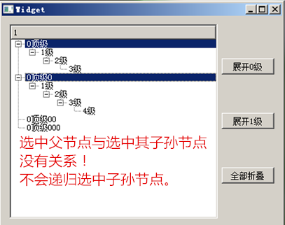

QT new 9-10-11
QT new 9
一些经典容器的若干操作
QListWidget
下面的文段来自QT帮助助手！
Detailed Description
QListWidget is a convenience class that provides a list view similar to the one supplied by QListView, but with a classic item-based interface for adding and removing items. QListWidget uses an internal model to manage each QListWidgetItem in the list.
For a more flexible list view widget, use the QListView class with a standard model.
List widgets are constructed in the same way as other widgets:
QListWidget *listWidget = new QListWidget(this); The selectionMode() of a list widget determines how many of the items in the list can be selected at the same time, and whether complex selections of items can be created. This can be set with the setSelectionMode() function.
There are two ways to add items to the list: they can be constructed with the list widget as their parent widget, or they can be constructed with no parent widget and added to the list later. If a list widget already exists when the items are constructed, the first method is easier to use:
new QListWidgetItem(tr("Oak"), listWidget);
new QListWidgetItem(tr("Fir"), listWidget);
new QListWidgetItem(tr("Pine"), listWidget); If you need to insert a new item into the list at a particular position, then it should be constructed without a parent widget. The insertItem() function should then be used to place it within the list. The list widget will take ownership of the item.
QListWidgetItem *newItem = new QListWidgetItem;
newItem->setText(itemText);
listWidget->insertItem(row, newItem); For multiple items, insertItems() can be used instead. The number of items in the list is found with the count() function. To remove items from the list, use takeItem().
The current item in the list can be found with currentItem(), and changed with setCurrentItem(). The user can also change the current item by navigating with the keyboard or clicking on a different item. When the current item changes, the currentItemChanged() signal is emitted with the new current item and the item that was previously current.
大致就是创建一个长得像那样链表似的一个控件！
在QT 的 UI设计下，常常见这个控件于： List Widget下面。
我们这里不对对象名称做什么修改了！默认的情况下——
ui -> listWidget 找到它来！
为了添加控件，我们有两种方式来进行：
// 方式1
QListWidgetItem* item = new QListWidgetItem("卢本伟牛逼");
ui->listWidget->addItem(item);
item->setTextAlignment(Qt::AlignHCenter); 这就是一种方式——通过包装成 Item 送到Widget里去。
// 方式2
QStringList list;
list << "卢"<<"本"<<"伪"<<"牛"<<"逼";
ui->listWidget->addItems(list); 这是通过传入String List 链表的方式送数据。
1）添加条目的函数
void QListWidget::addItem(QListWidgetItem * item) 这个添加函数需要实现 new 一个 QListWidgetItem 条目对象，然后添加到列表控件末尾，下面小节会专门讲 QListWidgetItem 类。
void QListWidget::addItem(const QString & label) 这第二个添加函数其实更常用，因为更简便，功能是将字符串 label 添加到列表控件末尾显示，其实该函数内部会自动根据字符串 new 一个条目对象添加到列表控件。
如果有设置好的字符串列表，那么可以通过如下函数把多个字符串全部添加到列表控件：
void QListWidget::addItems(const QStringList & labels)add 函数是将条目添加到末尾，如果要将条目插入到指定行 row 位置，则使用 insert 函数：
void QListWidget::insertItem(int row, QListWidgetItem * item) //插入条目到第 row 行
void QListWidget::insertItem(int row, const QString & label) //插入字符串到第 row 行
void QListWidget::insertItems(int row, const QStringList & labels) //插入多个字符串到从 row 行开始的多个行。获取列表控件里面的条目计数使用如下函数：
int QListWidget::count() const（2）删除函数
因为是基于条目的控件，所以列表控件的删除单个条目函数名字是 takeItem()：
QListWidgetItem * QListWidget::takeItem(int row) takeItem() 根据行号从列表控件移除一个条目，并返回该条目指针，如果行号不合法，返回 NULL 指针。
如果返回的是实际存在的条目，那么需要注意，返回的条目指针需要手动 delete 掉，因为列表控件不再拥有该条目，该条目不会由列表控件析构时自动删除。
takeItem() 函数还有第二个用途，因为列表控件没有直接的调整条目前后顺序的函数，可以先将要调整顺序的条目移出来takeItem()，然后再调用 insertItem() 把这个条目插入到新的位置。（重点关注之）
如果要清空整个列表控件，删除之前添加的所有条目，可以调用槽函数：
void QListWidget::clear()（3）条目访问函数
根据行号获取条目对象的指针，使用如下函数：
QListWidgetItem * QListWidget::item(int row) const 如果已知列表控件含有的条目对象指针，反查当前行号，使用如下函数：
int QListWidget::row(const QListWidgetItem * item) const 在图形界面，如果希望根据列表控件在屏幕显示的相对坐标位置（以列表控件内部左上角为原点）来获取条目，使用如下函数：
QListWidgetItem * QListWidget::itemAt(const QPoint & p) const
QListWidgetItem * QListWidget::itemAt(int x, int y) const反过来，如果根据已知条目，获取这个条目占据的矩形区域，使用如下函数：
QRect QListWidget::visualItemRect(const QListWidgetItem * item) const（4）当前选中条目的操作
获取列表控件当前选中条目的函数如下：
QListWidgetItem * QListWidget::currentItem() const //当前选中 条目
int QListWidget::currentRow() const //当前选中的行号如果当前没有选中的条目，那么返回的指针为 NULL，返回的序号为 -1 ，代码里要注意判断返回值。
设置已存在的某个条目为选中状态，使用函数：
void QListWidget::setCurrentItem(QListWidgetItem * item) //设置当前选中条目为 item
void QListWidget::setCurrentItem(QListWidgetItem * item, QItemSelectionModel::SelectionFlags command)
void QListWidget::setCurrentRow(int row, QItemSelectionModel::SelectionFlags command)//设置当前选中行为 row
void QListWidget::setCurrentItem(QListWidgetItem * item, QItemSelectionModel::SelectionFlags command) 第二个和第四个设置函数有个 SelectionFlags 类型的参数 command，这个参数决定选中的方式，是要选中QItemSelectionModel::Select ，还是取消选中 QItemSelectionModel::Deselect，还有其他选中方式，等到表格控件一节再详细列出来。
如果当前选中的条目发生变化，会触发如下三个信号，可以根据实际用途选择合适的信号：
void QListWidget::currentItemChanged(QListWidgetItem * current, QListWidgetItem * previous)
void QListWidget::currentRowChanged(int currentRow)
void QListWidget::currentTextChanged(const QString & currentText) 注意参数里的指针有可能为空值，序号可能为 -1，字符串也可能是空串，一定要注意判断非法的参数值。
本章的三个控件都可以设置选中模式，比如单选模式，一次只能选中一个条目，多选模式，一次可以选中多个条目等等，详细的选中模式在放到表格控件一节讲解，因为表格 中涉及的选中模式较多，一块讲解。本节的列表控件默认情况下，选中模式为单选 。QAbstractItemView::SingleSelection，以上的 current 等函数都是基于默认的单选模式的。
如果需要用到多选模式，可以设置 selectionMode 属性为 QAbstractItemView::ExtendedSelection，这种扩展选中模式类似常见的文件资源管理器的选中模式，可以使用 Ctrl 或 Shift 加鼠标点击实现多选：
void setSelectionMode(QAbstractItemView::SelectionMode mode) //设置选中模式
QAbstractItemView::SelectionMode selectionMode() const //获取选中模式 QAbstractItemView 是本章所有控件的抽象基类，本章后面控件也有类似的选中模式设置，如果把列表控件设置成多选模式，那么可以用如下函数获取同 时选中的多个条目：
QList<QListWidgetItem *> QListWidget::selectedItems() const 不论单选还是多选模式，条目选中情况有任何变化时，会触发如下信号：
void QListWidget::itemSelectionChanged()（5）条目查找和排序
如果需要根据文本查找匹配的条目，使用如下函数：
QList<QListWidgetItem *> QListWidget::findItems(const QString & text, Qt::MatchFlags flags) const 该函数第一个参数 text 是要查找的模板子串，第二个参数是匹配标志，Qt::MatchFlags 是非常通用的枚举类型，不仅可用于字符串匹配，还能用于其他类型变量的匹配，Qt::MatchFlags 包含关于查找匹配的多种方式的枚举值：
| Qt::MatchFlags 枚举常量 | 数值 | 描述 |
|---|---|---|
| Qt::MatchExactly | 0 | 精确匹配，执行基于 QVariant 的匹配。 |
| Qt::MatchFixedString | 8 | 执行基于字符串的匹配，如果不指定 MatchCaseSensitive，默认是大小写不敏感。 |
| Qt::MatchContains | 1 | 条目包含要查找的模板子串。 |
| Qt::MatchStartsWith | 2 | 条目以要查找的模板子串打头。 |
| Qt::MatchEndsWith | 3 | 条目以要查找的模板子串结尾。 |
| Qt::MatchCaseSensitive | 16 | 查找时大小写敏感。 |
| Qt::MatchRegExp | 4 | 根据正则表达式模板子串匹配字符串。 |
| Qt::MatchWildcard | 5 | 根据通配符模板子串（如 *.txt）匹配字符串。 |
| Qt::MatchWrap | 32 | 执行回绕查找，当查找到最后一个条目时返回到第一个的条目继续查找，直到所有的条目都检查一遍。 |
| Qt::MatchRecursive | 64 | 递归查找，遍历所有子条目。 |
后面两节的表格控件和树形控件也有类似的查找函数 findItems() ，第二个匹配标志参数也是一样的类型。
列表控件的自动排序是通过 sortingEnabled 属性来控制，获取和设置函数如下：
bool isSortingEnabled() const
void setSortingEnabled(bool enable) 列表控件条目默认是不排序的，如果希望自动按照字典序排序，调用 setSortingEnabled(true) 即可。另外还可以手动对列表控件现有条目排序：
void QListWidget::sortItems(Qt::SortOrder order = Qt::AscendingOrder) Qt::AscendingOrder 是按升序排列，Qt::DescendingOrder 是按降序排列。
（6）条目显示和运行时条目编辑
关于列表控件 QListWidget 和里面的条目 QListWidgetItem，需要注意条目 QListWidgetItem 仅仅是数据，不是控件或子控件，列表控件根据多个 QListWidgetItem 对象，来呈现条目里的数据，只有列表控件自己是控件实体。
列表控件默认以自己的方式呈现条目数据，比如白底黑字的普通条目显示，如果要按照特殊的子控件来显示字符串，比如用 QLabel 对象显示条目数据，可以用如下函 数：
void QListWidget::setItemWidget(QListWidgetItem * item, QWidget * widget) 列表控件会同时拥有 item 数据条目和用于显示 item 的子控件 widget。注意这里的子控件 widget 只有静态显示功能，如果用按钮作为显示子控件，那么按钮是不可点击的。如果希望自己定制一个能交互操作的子条目显示控件，需要使用 QListView 并子类化 QItemDelegate 类，这些复杂的等到模型视图章节再讲。
对于本节列表控件，如果要获取 setItemWidget() 函数指定某个条目的显示子控件，使用如下函数：
QWidget * QListWidget::itemWidget(QListWidgetItem * item) const 如果要删除上面 setItemWidget() 指定的特殊显示控件，使用函数：
void QListWidget::removeItemWidget(QListWidgetItem * item) 特殊的显示子控件移除后，该条目就还按照列表控件原来的普通条目显示。
如果希望在程序运行时编辑列表控件的条目，有两种方式，本小节先讲第一种（第二种是设置条目自身的特性标志），手动打开条目的文本编辑器（这个编辑器是列表控件自 带功能，与 setItemWidget 设置的显示子控件没关系）：
void QListWidget::openPersistentEditor(QListWidgetItem * item) 这个函数名是打开条目的持续编辑器，持续的意思是如果不调用关闭函数，该条目的编辑器会一直开启，关闭这个持续编辑器使用如下函数：
void QListWidget::closePersistentEditor(QListWidgetItem * item) 一般可以在检测到条目激活信号（itemActivated）时调用打开函数 openPersistentEditor() ，在当前条目变化（ currentItemChanged）时调用关闭函数 closePersistentEditor() 。 使用这一对开关持续编辑器函数涉及到编写多个信号的槽函数，使用比较麻烦，建议用后面第二小节介绍的条目标 志位和 QListWidget::editItem(QListWidgetItem * item) 实现条目的可编辑功能。
（7）其他信号和槽函数
除了上面关于当前条目变化和选中条目变化的信号，条目还有激活、单击、双击等信号，罗列如下：
void QListWidget::itemActivated(QListWidgetItem * item) //激活信号当用户点击或双击条目时，条目会被激活，具体哪些操作会激活条目，要根据操作系统设置来定，比如 Windows 一般是双击打开激活，KDE 桌面通常是单击打开激活。另外，系统的快捷键也可以激活条目，如 Windows 和 Linux X11 桌面是回车键激活，Mac OS X 是 Ctrl+0 ，一般激活信号用于开启编辑等操作。
void QListWidget::itemChanged(QListWidgetItem * item) //条目内容发生变化注意这是条目内容变化的信号，不是选中状态变化，程序如果在运行时改变了条目文本内容，比如持续编辑器修改了文本，会触发这个信号。
剩下几个单击、双击、进入、按压等信号意义比较直白，不详细解释了：
void QListWidget::itemClicked(QListWidgetItem * item) //条目单击信号
void QListWidget::itemDoubleClicked(QListWidgetItem * item) //条目双击信号
void QListWidget::itemEntered(QListWidgetItem * item) //鼠标追踪时进入条目的信号，一般用不着
void QListWidget::itemPressed(QListWidgetItem * item) //鼠标按键在条目上处于按下状态时发的信号列表控件的槽函数除了前面讲过的 clear() 槽函数用于清空所有条目，还有个比较实用的条目滚动函数，列表控件自带滚动条，当条目总数超出控件矩形能呈现的数目时，滚动条自动出现，通过滚动条支持更多的条目显示。使 用如下槽函数可 以让列表控件滚动到想显示的某个条目位置：
void QListWidget::scrollToItem(const QListWidgetItem * item, QAbstractItemView::ScrollHint hint = EnsureVisible)第一个参数 item 就是想显示出来的条目，第二个参数是滚动显示方式，默认是 QAbstractItemView::EnsureVisible，即保证指定条目显示出来，还有其他的滚动显示方式：
| QAbstractItemView::ScrollHint 枚举常量 | 数值 | 描述 |
|---|---|---|
| QAbstractItemView::EnsureVisible | 0 | 滚动到指定条目能显示出来即可。 |
| QAbstractItemView::PositionAtTop | 1 | 滚动直到将指定条目显示到可视区域的顶部。 |
| QAbstractItemView::PositionAtBottom | 2 | 滚动直到将指定条目显示到可视区域的底部。 |
| QAbstractItemView::PositionAtCenter | 3 | 滚动直到将指定条目显示到可视区域的中间。 |
原博客：[QT_007]Qt学习之QListWidget控件详解_天空之城8020的博客-CSDN博客
QT NEW 10
主要控件
QTreeWidget
Detailed Description The QTreeWidget class is a convenience class that provides a standard tree widget with a classic item-based interface similar to that used by the QListView class in Qt 3. This class is based on Qt’s Model/View architecture and uses a default model to hold items, each of which is a QTreeWidgetItem.
Developers who do not need the flexibility of the Model/View framework can use this class to create simple hierarchical lists very easily. A more flexible approach involves combining a QTreeView with a standard item model. This allows the storage of data to be separated from its representation.
In its simplest form, a tree widget can be constructed in the following way:
QTreeWidget *treeWidget = new QTreeWidget();
treeWidget->setColumnCount(1);
QList<QTreeWidgetItem *> items;
for (int i = 0; i < 10; ++i)
{
items.append(new QTreeWidgetItem(static_cast<QTreeWidget *>\ (nullptr),
QStringList(QString("item: %1").arg(i))));
}
treeWidget->insertTopLevelItems(0, items); Before items can be added to the tree widget, the number of columns must be set with setColumnCount(). This allows each item to have one or more labels or other decorations. The number of columns in use can be found with the columnCount() function.
The tree can have a header that contains a section for each column in the widget. It is easiest to set up the labels for each section by supplying a list of strings with setHeaderLabels(), but a custom header can be constructed with a QTreeWidgetItem and inserted into the tree with the setHeaderItem() function.
The items in the tree can be sorted by column according to a predefined sort order. If sorting is enabled, the user can sort the items by clicking on a column header. Sorting can be enabled or disabled by calling setSortingEnabled(). The isSortingEnabled() function indicates whether sorting is enabled.
一些详解：
原博客：
Qt编程指南，Qt新手教程，Qt Programming Guide
树形控件的节点可以有多层、多个子节点， 如果将子节点全部展开，那么每一行都是一个数据条目。QTreeWidgetItem 比较特殊，一个条目内部可以有多列数据信息，相当于表格控件一整行的表格单元集成为一个条目，所以树形条目要比前面两节的列表条目和表格条目都复杂。树形控件每行的条目之间可以是兄弟关系或父子关系，含有子节点的条目可以折叠也可以展开，进行遍历时有专门的迭代器 QTreeWidgetItemIterator 实现，也可以自行编写递归算法遍历所有条目。
8.3.1 QTreeWidget
在 Qt 设计师界面可以直接拖动树形控件到窗口里，下图展示树形控件的外观和构成：
默认情况下，树形控件最上面是一个树头条目，\树头条目也是 QTreeWidgetItem 对象**，可以有多列内容。
树头下面是真正的树形控件所有条目，在折叠的情况下，如上图所示，每行一个顶级条目，顶级条目也是 QTreeWidgetItem 对象，顶级条目的父节点指针 QTreeWidgetItem::parent() 为 NULL。
将所有节点展开之后，可以看到每个节点可以有多个子节点：
对于包含子节点的父节点，左边会有小的三角形指示器，用于控制折叠或展开父节点。子节点也可以拥有更低级别的子节点（孙节点），以此类推，树形控件没 有限定子节点 的层数。顶级节点和其子孙节点的数据结构一样，都可以有多列数据，只是添加的函数、父节点指针不一样。下面介绍树形控件的函数和功能。
（0）树形控件的构造函数很简单：
QTreeWidget(QWidget * parent = 0) 参数里只有指定父窗口或父控件的指针 parent 。树形控件在添加条目之前，必须要先设置列数：
void setColumnCount(int columns) //设置列数
int columnCount() const //获取列数 默认的列数是 1 列，如果涉及到多列数据，比如文件浏览树，有文件名、文件类型、大小、修改时间等等，就需要设置为多列数据的树。
树形控件设置好列数就可以添加相应的顶级条目，添加顶级条目是由树形控件自身的函数实现，而子条目则由 QTreeWidgetItem 的函数实现。本小节主要围绕树形控件和其基类的函数来讲，树形控件也可以设置和表格控件类似的表头，这里称为树头条目。
（1）添加和访问顶级条目
树形控件顶级条目的操作比较类似 QListWidget 的列表条目操作函数。新建条目之后，可以用如下函数把条目添加到树形控件的顶级条目列表末尾：
void QTreeWidget::addTopLevelItem(QTreeWidgetItem * item) //添加一个顶级条目到末尾
void QTreeWidget::addTopLevelItems(const QList<QTreeWidgetItem *> & items) //添加多个顶级条目到末尾 如果希望将条目插入到指定顶级条目列表的 index 序号位置，使用如下函数：
void QTreeWidget::insertTopLevelItem(int index, QTreeWidgetItem * item)
void QTreeWidget::insertTopLevelItems(int index, const QList<QTreeWidgetItem *> & items) 树形控件所有的顶级条目父节点指针都为 NULL （父节点是指树形层次中的节点关系，而条目的父控件依然是树形控件本身）。
添加了顶级条目之后，可以对顶级条目进行计数：
int QTreeWidget::topLevelItemCount() const（2）移除顶级条目
移除顶级条目的函数也是take*打头：
QTreeWidgetItem * QTreeWidget::takeTopLevelItem(int index) index是顶级条目的序号，该函数只是从树形控件卸下顶级条目，但不会删除条目的内存空间，如果希望彻底删除，那么手动 delete 该函数返回的条目。
如果要清空所有的顶级条目和子条目，使用槽函数：
void QTreeWidget::clear()（3）条目访问函数
对于顶级条目，如果知道顶级条目的序号获取对应的条目：
QTreeWidgetItem * QTreeWidget::topLevelItem(int index) const 反过来，对于已知顶级条目对象，查看其顶级序号：
int QTreeWidget::indexOfTopLevelItem(QTreeWidgetItem * item) const 如果条目不是顶级条目或者条目不属于该控件，那么会返回 -1。
树形控件实际运行时，可能既有顶级条目，也有展开后的子孙条目同时显示，所以某个条目上面或下面的相邻条目不一定是同级别的兄弟条目，有可能是叔辈祖 辈的条目，也 可能是子辈孙辈条目。获取某个条目的相邻条目函数为：
QTreeWidgetItem * QTreeWidget::itemAbove(const QTreeWidgetItem * item) const //上面相邻条目
QTreeWidgetItem * QTreeWidget::itemBelow(const QTreeWidgetItem * item) const //下面相邻条目 从屏幕控件显示角度，如果根据树形控件内部相对坐标获取条目（树形控件显示区域的左上角为原点），使用下面函数：
QTreeWidgetItem * QTreeWidget::itemAt(const QPoint & p) const
QTreeWidgetItem * QTreeWidget::itemAt(int x, int y) const 这两个函数是一个意思，一个用 QPoint 对象表示相对坐标，另一个直接用 x 和 y 数值表示坐标，如果对应坐标没有条目，会返回 NULL，注意判断 返回值。
树形控件也是自带滚动条的，如果条目特别多，自动显示滚动条，对于树形控件在屏幕可见的条目，可以根据条目对象获取它的可视矩形（树形控件显示区域的 左上角为原 点）：
QRect QTreeWidget::visualItemRect(const QTreeWidgetItem * item) const（4）当前条目的操作
树形控件的选中操作默认比较像 QListWidget，如果不手动设置，只能选中一个高亮条目。
获取当前高亮选中条目的函数为：
QTreeWidgetItem * QTreeWidget::currentItem() const 树形控件可以有多列，当前条目被点击选中的列号为：
int QTreeWidget::currentColumn() const 树形控件内的条目一般都没有固定行号，因为条目可以展开也可以折叠，行号是变化的，所以没有基于行号的操作函数。
如果要设置某个条目为当前选中的状态：
void QTreeWidget::setCurrentItem(QTreeWidgetItem * item)
void QTreeWidget::setCurrentItem(QTreeWidgetItem * item, int column)
void QTreeWidget::setCurrentItem(QTreeWidgetItem * item, int column, QItemSelectionModel::SelectionFlags command) 第一个 setCurrentItem() 函数相当于设置该条目整行高亮选中，第二个是设置该条目行的 column 列高亮选中，第三个函数是单次选中命令，参考“8.2.4 选中区域和选中行为”的单次选中命令内容，只是树形控件是一整行为一个条目，定位到条目的某列数据，就 类似指定表格控件的单元格。
如果当前高亮选中的状态发生变化，会触发如下信号：
void QTreeWidget::currentItemChanged(QTreeWidgetItem * current, QTreeWidgetItem * previous) 参数里分别是当前高亮选中的条目，和之前高亮选中的条目，注意指针可能是 NULL，使用指针前一定要判断指针非空
（5）条目查找和排序
如果要根据模板子串查找某列文本匹配的条目，使用如下函数：
QList<QTreeWidgetItem *> QTreeWidget::findItems(const QString & text, Qt::MatchFlags flags, int column = 0) const 参数里text是模板子串，flags是匹配标志（参看“8.1.1 QListWidget”中的字符串匹配标志表格），第三个参数是指定查找的列。该函数只查找一列的文本，其他列的文本是不查找的。如果需要查找所有列数据，那么要根据不同列号逐列查询。
类似表格控件，树形控件也可以按照列的文本进行自动排序，自动排序的设置函数为：
bool isSortingEnabled() const //设置是否自动排序
void setSortingEnabled(bool enable) //查看是否开启自动排序 指定排序的列号和升序降序，使用从基类继承的函数：
void QTreeView::sortByColumn(int column, Qt::SortOrder order) 在没有开启自动排序的情况下，也可以调用该函数进行一次性的条目排序。
（6）条目显示和运行时条目编辑
可以为条目的某列“单元格”设置单独的控件来静态显示（控件不具有编辑功能）：
void QTreeWidget::setItemWidget(QTreeWidgetItem * item, int column, QWidget * widget) //设置条目列控件
QWidget * QTreeWidget::itemWidget(QTreeWidgetItem * item, int column) const //获取条目列控件，不设置就是NULL 注意该函数只能在条目添加到树形控件之后*才能调用，否则无效，\并且条目列控件只能用于显示，无法编辑，如果要定制可编辑的“单元格”控件，必须用基类 QTreeView 并继承 QItemDelegate 做代理，这些内容到后面模型视图章节讲解
再次强调：itemWidget 条目控件，在默认情况下是与条目本身数据完全无关的，是条目数据的替换品，而不是协作模式。只有手动设置信号与槽，它们才可能关联上。
QListWidget 和 QTreeWidget 的条目控件都是静态显示，不能编辑。
QTreeWidget 控件的条目列控件 widget 还必须把默认是透明背景*，这样控件的内容和内部模型数据（就是条目的列数据）同时显示，文本会重影，效果就糟糕了。
删除条目的列控件使用如下函数：
void QTreeWidget::removeItemWidget(QTreeWidgetItem * item, int column) 这个函数没有返回值，会自动地彻底删除条目列控件。
在大多数情况下都用不到 itemWidget ，因为能够为条目设置可编辑标志位，然后调用如下函数开启树形控件自带的文本编辑器：
void QTreeWidget::editItem(QTreeWidgetItem * item, int column = 0) 参数 item 是指定的条目，column 是条目的列（类似“单元格”）。在没有为条目设置可编辑标志位的情况下，可以调用下面一对函数进行持续编辑器的开启和关闭：
void QTreeWidget::openPersistentEditor(QTreeWidgetItem * item, int column = 0)
void QTreeWidget::closePersistentEditor(QTreeWidgetItem * item, int column = 0) 注意这对函数一开一关，要成对调用，否则编辑完了不会自动关闭持续编辑器。
（7）信号
关于当前高亮选中变化的信号 currentItemChanged() 前面讲过了，这里先列几个常规的信号，然后再将树形控件独有的信号。常规信号就是下面这 几个：（条目列就类似表格控件的单元格）
void itemActivated(QTreeWidgetItem * item, int column) //条目列被激活
void itemChanged(QTreeWidgetItem * item, int column) //条目列的数据发生变化，比如文本或图标修改了
void itemClicked(QTreeWidgetItem * item, int column) //条目列被单击
void itemDoubleClicked(QTreeWidgetItem * item, int column) //条目列被双击
void itemEntered(QTreeWidgetItem * item, int column) //进入条目列
void itemPressed(QTreeWidgetItem * item, int column) //条目列被点 击按下树形控件最独特的就是展开和折叠信号：
void QTreeWidget::itemExpanded(QTreeWidgetItem * item) //条目展开时发送信号
void QTreeWidget::itemCollapsed(QTreeWidgetItem * item) //条目折叠时发送信号 如果调用槽函数 expandAll() 展开所有子孙条目，那么不会触发 itemExpanded() 信号，因为触发太多会非常影响性能。
类似地，如果用槽函数 collapseAll() 折叠所有子孙条目，也不会触发 itemCollapsed() 信号，以免影响性能。
举例来说，在文件夹浏览的时候，因为操作系统里的文件太多，没法一次性构建完整的文件树，那么就可以用展开和折叠信号实时枚举某一层次文件夹的内容， 而不是一次性 枚举文件系统所有文件，因为一次性枚举所有文件的性能太糟糕。
树形控件还有一个 itemSelectionChanged() 信号，一般在多选模式才会用到，稍后讲解。
（8）槽函数
树形控件的槽函数包括四个（基类的另算）：
void clear() //清空整个树形控件
void collapseItem(const QTreeWidgetItem * item) //折叠指定的条目
void expandItem(const QTreeWidgetItem * item) //展开指定 条目
void scrollToItem(const QTreeWidgetItem * item, QAbstractItemView::ScrollHint hint = EnsureVisible) //滚动到指定条目 滚动函数 scrollToItem() 第二个参数是\滚到到该条目的显示方式**，参考“8.1.1 QListWidget”QAbstractItemView:: ScrollHint 枚举常量的表格。
（9）基类 QTreeView 的函数
QTreeView 的功能函数也很多，这里列举几个可能常用的，详细的内容等到模型视图章节讲解。关于列隐藏或显示、设置列宽的函数如下：
void QTreeView::setColumnHidden(int column, bool hide) //设置列隐藏或显示
bool QTreeView::isColumnHidden(int column) const //判断列是否隐藏
void QTreeView::hideColumn(int column) //槽函数，隐藏指定列
void QTreeView::showColumn(int column) //槽函数，显示指定列
void QTreeView::setColumnWidth(int column, int width) //设置列宽
int QTreeView::columnWidth(int column) const //获取指定列的宽度
void QTreeView::resizeColumnToContents(int column) //槽函数，自动调整 指定列的宽度属性
//indentation 控制显示父子节点的缩进宽度：
int indentation() const //获取父子节点的缩进宽度
void setIndentation(int i) //设置缩进宽度
void resetIndentation() //重置缩进宽度为默认值基类还有几个常用的折叠和展开槽函数：
void collapseAll() //折叠所有子孙节点，这样只能看到顶级节点
void expandAll() //展开所有子孙节点，完全展开的树
void expandToDepth(int depth) //展开 depth 层级的子节点 expandToDepth() 函数是指一直展开，直到将第 depth 层级的子节点都展开为止。以顶级条目为第 0 层级，顶级条目的直接子节点为第 1 层级，孙子节点为第 2 层级，依次类推。
例如 expandToDepth(0) 的效果如下：
如果调用 expandToDepth(1) 展开第1级的节点：
如果把 expandToDepth() 参数设置成负数，那么相当于展开无穷大级别，就是展开所有的子孙节点。
（10）树头条目
树形控件只有一个表头，就是显示在上面的水平表头，本节也叫树头条目。设置树头条目的函数为：
void QTreeWidget::setHeaderItem(QTreeWidgetItem * item) //设置树头条目，树头条目可以有多列数据，相当于多列的表头一次性设置了。
void QTreeWidget::setHeaderLabel(const QString & label) //只设置第 0 列的表头
void QTreeWidget::setHeaderLabels(const QStringList & labels) //设置多列的表头
QTreeWidgetItem * QTreeWidget::headerItem() const //获取树头条目
树头条目本质其实也是由 QHeaderView 子控件来显示的，可以在基类找到相关函数：
QHeaderView * QTreeView::header() const //获取表头视图控件
void QTreeView::setHeader(QHeaderView * header) //设置表头视图， 一般树形控件不需要用这个函数
void QTreeView::setHeaderHidden(bool hide) //设置表头是否隐藏
bool QTreeView::isHeaderHidden() const //判断是否隐藏了表头 无论是 QTableWidget 还是 QTreeWidget 的表头，都是 QHeaderView 子控件显示，QHeaderView 参考“8.2.3 表头设置”的内容。
（11）选中行为和选中模式
与 QTableWidget 类似，QTreeWidget也从祖类 QAbstractItemView 继承了选中行为和选中模式的属性：
QAbstractItemView::SelectionBehavior selectionBehavior() const //获取选中行为，按条目选中、整行或整列选中
void setSelectionBehavior(QAbstractItemView::SelectionBehavior behavior) //设置选中行为
QAbstractItemView::SelectionMode selectionMode() const //获取选中模式，比如单选、多选、扩展选择
void setSelectionMode(QAbstractItemView::SelectionMode mode) //设置选中模式 关于选中模式和选中行为的枚举常量参看“8.2.4 选中区域和选中行为”小节中的枚举常量表格，单次选中命令的函数和枚举常量也参考该小节。
默认情况下，树形控件是按照整行选中，并且是单选模式，如果把选中模式改成多选的 QAbstractItemView::ExtendedSelection，那么树形控件也可以使多选的，这时候信号 itemSelectionChanged() 就能派上用场：
void QTreeWidget::itemSelectionChanged() 多选状态变化时会触发该信号（单选模式也触发，只是不需要用这个信号），可以关联该信号，监视当前所有选中的条目：
QList<QTreeWidgetItem *> QTreeWidget::selectedItems() const 注意，这里的选中条目仅仅是指实际显示的直接选中的条目，不包括折叠隐藏的子孙条目计数，因为选中父节点与选中其子孙节点没关系，不会递归选中所有子 孙：

树形控件及其基类没有递归选中子条目的属性或函数，如果希望递归选中某个节点的所有子孙节点，那么需要自行编写递归函数。关于树形控件类本身的内容介 绍到这，因为 涉及到父子节点隶属关系、节点展开和折叠，树形控件还有很大一部分功能都是由其条目类 QTreeWidgetItem 的函数实现的.
#include "mainwindow.h"
#include "ui_mainwindow.h"
#include<QListWidgetItem>
#include<QStringList>
MainWindow::MainWindow(QWidget *parent)
: QMainWindow(parent)
, ui(new Ui::MainWindow)
{
ui->treeWidget->setHeaderLabels(QStringList()<<"卢本伟"<<"牛逼");
QTreeWidgetItem* item = new QTreeWidgetItem(QStringList()<<"乐");
QTreeWidgetItem* item2 = new QTreeWidgetItem(QStringList()<<"乐2");
ui->treeWidget->addTopLevelItem(item);
ui->treeWidget->addTopLevelItem(item2);
}QT NEW 11
主要控件
QTableWidget
Detailed Description Table widgets provide standard table display facilities for applications. The items in a QTableWidget are provided by QTableWidgetItem.
If you want a table that uses your own data model you should use QTableView rather than this class.
Table widgets can be constructed with the required numbers of rows and columns:
tableWidget = new QTableWidget(12, 3, this); Alternatively, tables can be constructed without a given size and resized later:
tableWidget = new QTableWidget(this);
tableWidget->setRowCount(10);
tableWidget->setColumnCount(5); Items are created outside the table (with no parent widget) and inserted into the table with setItem():
QTableWidgetItem *newItem = new QTableWidgetItem(tr("%1").arg(\
(row+1)*(column+1)));
tableWidget->setItem(row, column, newItem); If you want to enable sorting in your table widget, do so after you have populated it with items, otherwise sorting may interfere with the insertion order (see setItem() for details).
Tables can be given both horizontal and vertical headers. The simplest way to create the headers is to supply a list of strings to the setHorizontalHeaderLabels() and setVerticalHeaderLabels() functions. These will provide simple textual headers for the table’s columns and rows. More sophisticated headers can be created from existing table items that are usually constructed outside the table. For example, we can construct a table item with an icon and aligned text, and use it as the header for a particular column:
QTableWidgetItem *cubesHeaderItem = new QTableWidgetItem(tr("Cubes"));
cubesHeaderItem->setIcon(QIcon(QPixmap(":/Images/cubed.png")));
cubesHeaderItem->setTextAlignment(Qt::AlignVCenter); The number of rows in the table can be found with rowCount(), and the number of columns with columnCount(). The table can be cleared with the clear() function.
详解
原博客：
Qt编程指南，Qt新手教程，Qt Programming Guide
QTableWidgetItem
表格控件条目 QTableWidgetItem 与 8.1.2 节 QListWidgetItem 有很多相似的地方，
QTableWidgetItem 也是一个纯数据类，不是控件，没有基类，也就没有信号和槽函数。QTableWidgetItem 可以直接用数据流 QDataStream 读写，表格条目不单单有文本，还可以有自己的图标、复选框等特性，表格控件会根据条目对象的丰富特性来呈现数据并进行交互操作。
（1）首先来看看条目的构造函数：
QTableWidgetItem(int type = Type)
QTableWidgetItem(const QString & text, int type = Type)
QTableWidgetItem(const QIcon & icon, const QString & text, int type = Type)
QTableWidgetItem(const QTableWidgetItem & other) //复制构造函数 参数里的 type 一般用于派生类，指定条目独特的分类，对于普通的表格控件条目，通常用默认的数值即可。第二个构造函数是指定了条目的文本，第三个构造函数同 时指定了条目图标和文本。
在构造函数里不能直接指定所属的表格控件，因为表格控件有行号、列号所以不能简单追加到表格里，而只能用表格控件的 QTableWidget::setItem() 函数把条目设置到指定单元格里。注意一个条目只能设置给表格控件唯一的一个单元格，不能把一个条目设置给多个单元格。如果希望为多个单元格设置相似的条目数据内容，那么可 以用后面介绍的 clone() 函数制造大量新的复制体条目。
复制构造函数不会复制旧条目的 type() 类型值和tableWidget() 所属表格控件指针，条目其他的内部数据和条目标志都会复制。
（2）复制函数和运算符函数
除了复制构造函数，还有专门的克隆函数：
QTableWidgetItem * QTableWidgetItem::clone() const 克隆函数会新建一个当前条目的复制体，然后返回新复制体条目的指针，如果要构造并添加大量重复内容的条目，这个函数就比较实用。clone() 函数内部会调用复制构造函数创建新条目并返回。
条目复制还可以用等于号函数：
QTableWidgetItem & QTableWidgetItem::operator=(const QTableWidgetItem & other) 等于号函数复制的内容与复制构造函数差不多，type() 类型值和 tableWidget() 所属表格控件指针也不复制。
还有个小于号函数，可以比较条目文本的字典序：
QTableWidgetItem & QTableWidgetItem::operator=(const QTableWidgetItem & other) 如果希望使用更多的比较函数，可以直接用 QString 的比较函数。
（3）QTableWidgetItem 的功能函数与内部数据
QTableWidgetItem 内部的数据也大致分为两类：第一类是以数据角色形式管理的通用数据，这些数据自动参与 QDataStream 数据流的读写；第二类是非通用数据，不参与数据流读写，与 QListWidgetItem 和 QListWidget 自身特性有关。QTableWidgetItem 主要的功能函数也是围绕这两类内部数据展开的。
● 第一类：通用数据及其处理函数
通用数据是以数据角色与数据变量一一对应的形式存储管理，比如设置文本 setText()、设置图标 setIcon() 等函数，其本质都是根据各自的角色调用通用设置数据的函数：
virtual void setData(int role, const QVariant & value) 也可以根据角色来获取各个数据变量：
virtual QVariant data(int role) const 查看表格控件的源代码文件可以看到关于图标操作函数的源码：
inline QIcon icon() const
{
return qvariant_cast<QIcon>(data(Qt::DecorationRole));
}
inline void QTableWidgetItem::setIcon(const QIcon &aicon)
{
setData(Qt::DecorationRole, aicon);
} QTableWidgetItem 的通用数据与 QListWidgetItem 的通用数据一模一样，函数名也一样，列表如下：
| 获取函数 | 设置函数 | 数据角色 | 描述 |
|---|---|---|---|
| text() | setText(const QString &text) | Qt::DisplayRole | 条目显示的文本。 |
| icon() | setIcon(const QIcon &icon) | Qt::DecorationRole | 条目显示的图标。 |
| statusTip() | setStatusTip(const QString &statusTip) | Qt::StatusTipRole | 如果主界面有状态栏，鼠标悬停在该条目上时显示该状态信息到状态栏。 |
| toolTip() | setToolTip(const QString &toolTip) | Qt::ToolTipRole | 鼠标悬停在该条目上时显示的工具提示信息。 |
| whatsThis() | setWhatsThis(const QString &whatsThis) | Qt::WhatsThisRole | 如果主界面窗口标题栏有？帮助按钮，点击帮助按钮再点击该条目会显示该帮助信息。 |
| font() | setFont(const QFont &font) | Qt::FontRole | 显示条目文本用的字体。 |
| textAlignment() | setTextAlignment(int alignment) | Qt::TextAlignmentRole | 文本的对齐方式。 |
| backgroundColor() | setBackgroundColor(const QColor &color) | Qt::BackgroundColorRole | 文本背景色。 |
| textColor() | setTextColor(const QColor &color) | Qt::TextColorRole | 文字颜色。 |
| background() | setBackground(const QBrush &brush) | Qt::BackgroundRole | 条目的背景画刷。 |
| foreground() | setForeground(const QBrush &brush) | Qt::ForegroundRole | 条目的前景画刷。 |
| checkState() | setCheckState(Qt::CheckState state) | Qt::CheckStateRole | 条目自带的复选框选中状态，可以是三态复选框。 |
| sizeHint() | setSizeHint(const QSize &size) | Qt::SizeHintRole | 条目显示的建议尺寸。 |
表格条目 QTableWidgetItem 可以直接用数据流 QDataStream 读写，是通过下面运算符重载函数实现的：
QDataStream & operator<<(QDataStream & out, const QTableWidgetItem & item)
QDataStream & operator>>(QDataStream & in, QTableWidgetItem & item) 使用 >> 和 << 运算符进行流输入输出比较常见，当然也可以用 QTableWidgetItem 类内部的读写函数进行输入输出：
void QTableWidgetItem::read(QDataStream & in)
void QTableWidgetItem::write(QDataStream & out) const 第二类：非通用数据及其操作函数
表格控件的条目也是在构造函数一次性指定条目类型，然后这个类型是只读的：
int QTableWidgetItem::type() const 类型值一般用于派生类区分不同的条目类型，自定义的条目类型值需要大于等于 QTableWidgetItem::UserType 。
新条目通过表格控件 QTableWidget::setItem() 函数设置给表格控件之后，条目会自动保存所属的表格控件指针，可以用如下函数获取：
QTableWidget * QTableWidgetItem::tableWidget() const 程序运行时，除了可以通过表格控件的 QTableWidget::selectedItems() 获取用户选中的条目列表，每个单元格条目自身也会记录是否 被用户选中，并且能设置自身是否被选中：
bool QTableWidgetItem::isSelected() const //判断条目自身是否高亮选中
void QTableWidgetItem::setSelected(bool select) //设置条目自身是 否被选中 表格控件条目初始化时也有默认的标志位，并且运行时可以修改条目的特性标志：
Qt::ItemFlags QTableWidgetItem::flags() const //获取特性标志位
void QTableWidgetItem::setFlags(Qt::ItemFlags flags) //设置特性标志位 QTableWidgetItem 构造时默认的标志位为：
| QT宏 |
|---|
| Qt::ItemIsSelectable |
| Qt::ItemIsUserCheckable |
| Qt::ItemIsEnabled |
| Qt::ItemIsDragEnabled |
| Qt::ItemIsDropEnabled |
| Qt::ItemIsEditable |
因此程序代码生成的所有表格条目默认都是可编辑的，程序运行时用户双击空的单元格时，表格控件会自动创建新条目保存用户编辑内容，这些自动创建的条目也都是可编辑的。如果希望条目是只读的，那么把标志位设置不带Qt::ItemIsEditable 的新标志位即可。
Qt::ItemFlags 所有的枚举常量在 8.1.2 节末尾有详细的表格描述，这里不重复贴了。表格条目默认就是支持复选状态的，只是默认没有显示出来，要让表格控件显示条目对应的复选框，可以用下面一句代码实现：
item->setCheckState( Qt::Unchecked ); //显示复选框 对于表格控件和表格条目，自带单行编辑器和复选框功能，因此不需要为单元格添加自定义的单行编辑器或复选框，如果要用到其他更多的输入控件，那才需要定制单元格。
表格控件条目与 QListWidgetItem 最大的一个区别就是表格条目既有行号，也有列号：
int QTableWidgetItem::row() const //获取行号
int QTableWidgetItem::column() const //获取列号 行号和列号也是在 QTableWidget::setItem() 函数里指定的，条目自身并不能修改行号或列号。表格控件条目与 QListWidgetItem 另一个区别是，表格控件条目没有隐藏函数，所有表格条目都是显示的（只要不被单元格控件QTableWidget::cellWidget() 遮挡）。
#include "widget.h"
#include "ui_widget.h"
Widget::Widget(QWidget *parent)
: QWidget(parent)
, ui(new Ui::Widget)
{
ui->setupUi(this);
//设函数列数
ui->tableWidget->setColumnCount(3);
//设置表头
ui->tableWidget->setHorizontalHeaderLabels(QStringList()<<"姓名"<<"性别"<<"年龄");
ui->tableWidget->setRowCount(10);
ui->tableWidget->setItem(0,0,new QTableWidgetItem("泰勒"));
}
Widget::~Widget()
{
delete ui;
}